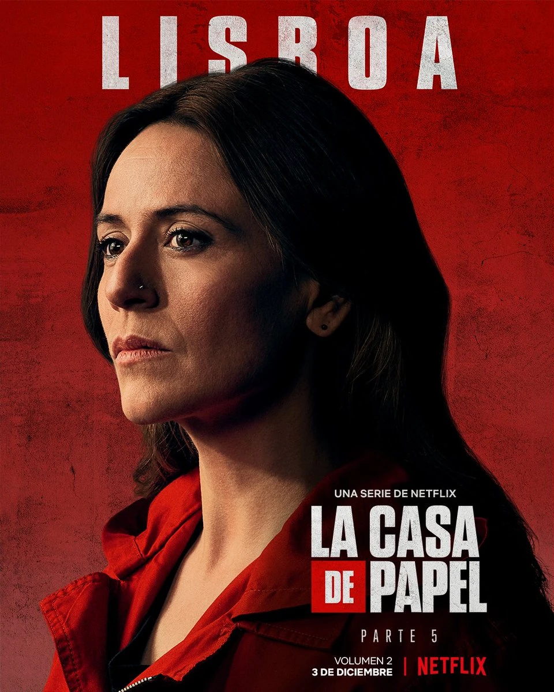
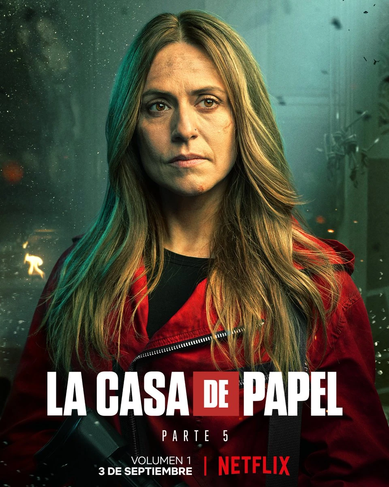
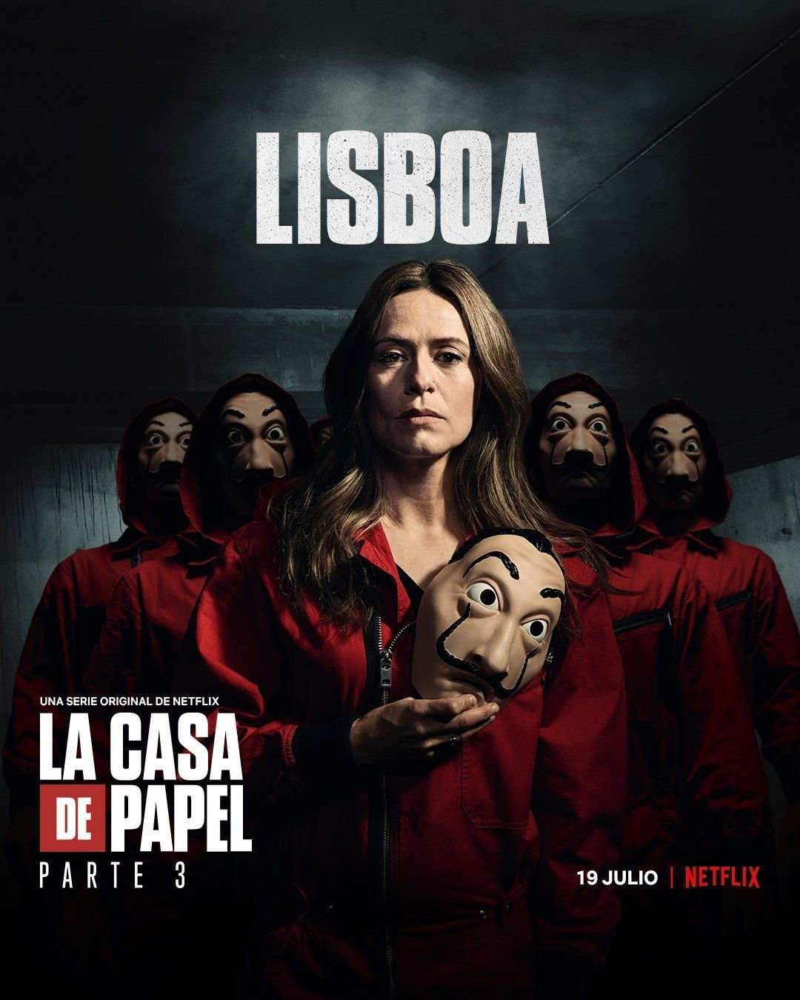

Ракель Мурільйо - пізніше відома під псевдонімом Лісабон. Жінка була інспектором іспанської поліції та очолювала поліцейську операцію під час пограбування Королівського монетного двору Іспанії.
Персонаж Ракель Мурільйо є складною та цікавою постаттю, яка зазнає великого емоційного розвитку протягом серіалу. Спочатку вона виступає як співробітник поліції, що розслідує напад на Монетний двір Іспанії, але з часом вона закохується в творця плану - Серхіо Маркіно, також відомим як "Професор", який організував цю велику злочинну операцію.
Ракель демонструє сильний характер та винахідливість, відчуття справедливості та принциповість, що робить її відмінним противником для групи злочинців. Вона виявляється ключовим гравцем у грі, яку ведуть злочинці та поліція. Протягом серіалу Ракель зіштовхується зі своїми внутрішніми конфліктами, адже вона вступає в опозицію до своєї власної робочої групи.
Вона стає одним з найулюбленіших персонажів серіалу завдяки своїй сили, вмінню аналізувати ситуацію та захищати своїх близьких.

Ракель Мурільйо зателефонували у її вихідний і попросили вести переговори з грабіжниками, які захопили Королівське монетне подвір'я. Вона погодилася і сказала оператору надіслати машину, на що їй відповіли, що транспорт вже на вулиці. З цього ми можемо зробити висновок, що Ракель була довіреним та улюбленим інспектором.
Протягом усього пограбування вона відповідала за переговори з професором.
Незважаючи на те, що вона є дуже здібним слідчим, її обманює Професор, який зближується з нею під своїм вигаданим ім'ям Сальва Мартін, щоб вплинути на діяльність поліції.
Спочатку Ракель не розуміла ігор Професора, часто діючи так, як він передбачав, але в міру продовження їхнього спілкування по телефону, Ракель все більше починала розуміти логіку головного керівника пограбування. Вона зрозуміла, що машину грабіжників, Ібіцу, швидше за все відвезли кудись на смітник, також вона здогадалася, що швидше за все штаб грабіжників був десь неподалік аптеки, де Берлін, особистість якого було розкрито, закуповував свої ліки у великій кількості. Їй же належить ідея з пасткою всередині лікарні, де лежить нібито прокинувся Анхель Рубіо, який знає особу Професора.
Зрештою, під час свого побачення з Сальвою, Ракель помічає руду волосину у нього на піджаку і розуміє, що він і є Професор. Це наражає її на сильний шок і паніку, але вона швидко збирається і захоплює Професора в заручники, відводячи в особняк грабіжників. Там, незважаючи на всі спроби, вона не може вплинути на Професора через свої почуття, а Серхіо, користуючись цим, їде з особняка, залишаючи її одну без транспорту та телефону.

Після повернення до поліції, виявляється, що і вони вирахували хтось Професор, а також її зв'язок з ним. Ракель не вдається переконати інших у тому, що вона не помагала в пограбуванні, тому вона вирішує довести це справою – знайти лігво Професора. Користуючись значком Анхелья Рубіо, вона за допомогою камер обчислює місце розташування Серхіо і заходить до будівлі, що заарештувати її, проте Ракель зупиняють серби.
Професор переконує її не здавати його, бо їх нікому не зашкодили – усі заручники живі, а гроші вони не крадуть у людей, а друкують. Ракель погоджується з ним і їде до Рубіо, що прокинувся, де її заарештовує поліція.
Через рік після пограбування вона знаходить Професора, і вони починають жити разом.
Мурільйо стає частиною групи грабіжників, коли вони готують друге пограбування, цього разу націлене на Банк Іспанії, і залишається на боці Професора, коли він знову починає діяти за лаштунками. Одного разу вона знову була схоплена поліцією, а пізніше приєднується до грабіжників усередині Банку Іспанії.
Ракель вперше зустрічає Професора у кафе поруч із Монетним двором, коли він дає їй свій мобільний телефон, щоб зателефонувати її матері. Вони стають друзями і, зрештою, вона закохується, не підозрюючи, що він є «натхненником» пограбування. Коли вона дізнається про це, вона робить все можливе, щоб обдурити його і відправити у в'язницю, але врешті-решт він переконує її, і вона погоджується на його план, дозволяючи йому втекти з грошима і знаходячи його через рік на Палавані, острові на Філіппінах. Пізніше вона приєднується до пограбування у ролі Лісабон і як заступник Професора всередині банку. Професор збожеволів, коли Лісабон була неправдиво страчена, а потім відчув полегшення, коли вона втекла від суду і увійшла до банку Іспанії.